OpenStack UI is a GWT UI intended to be a base platform to integrate OpenStack related services.
It's built upon OpenStack Java SDK.
Apache Maven 3.0.3 (r1075438; 2011-02-28 18:31:09+0100) Maven home: /usr/share/maven Java version: 1.6.0_26, vendor: Apple Inc. Java home: /System/Library/Java/JavaVirtualMachines/1.6.0.jdk/Contents/Home Default locale: en_US, platform encoding: MacRoman OS name: "mac os x", version: "10.6.8", arch: "x86_64", family: "mac"
The OpenStack UI has been tested only with devstack stable/essex branch
The config screen allow you to specify where are your identity endpoints, and the admin token you specified when you installed devstack
For more information about the execution you can read Tomcat 7 Maven Plugin
https://github.com/woorea/openstack-ui/issues
| 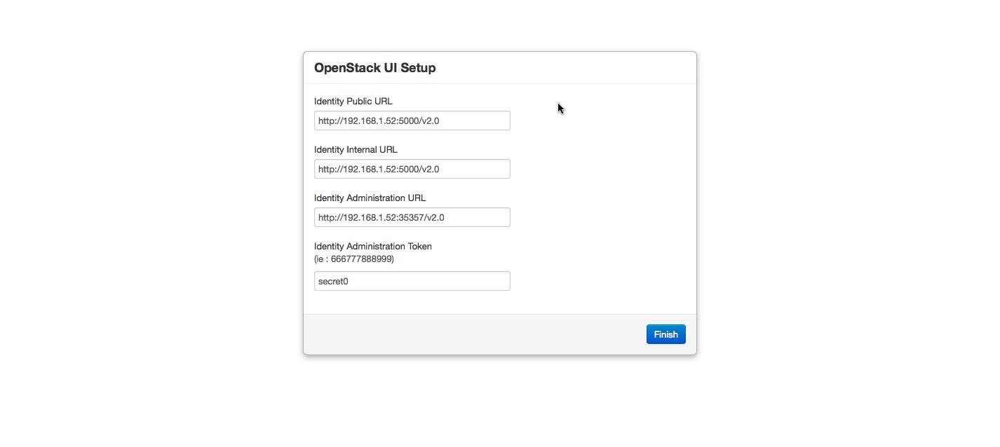 |
| Tenants | 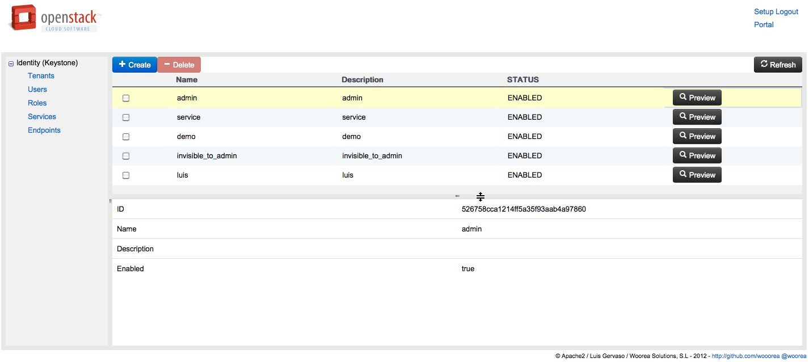 |
| Users | 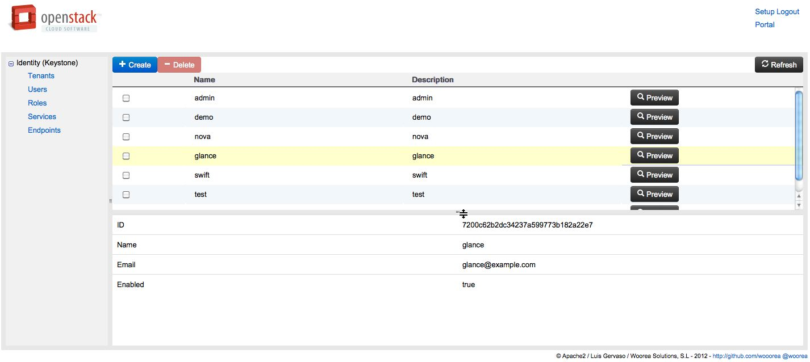 |
| Roles | 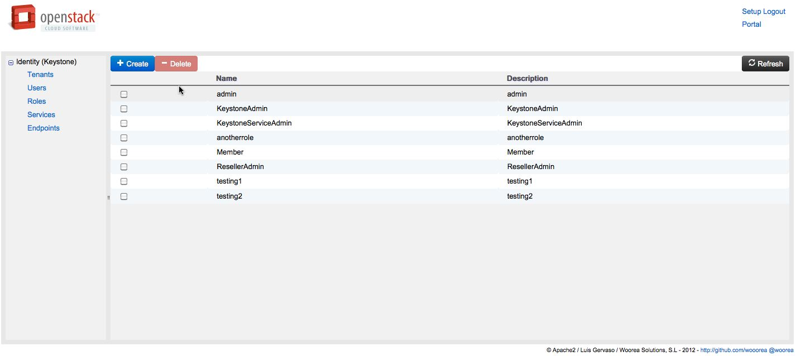 |
| Services | 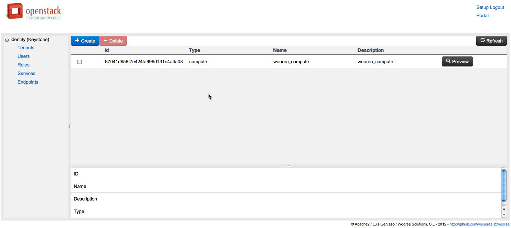 |
| Servers | 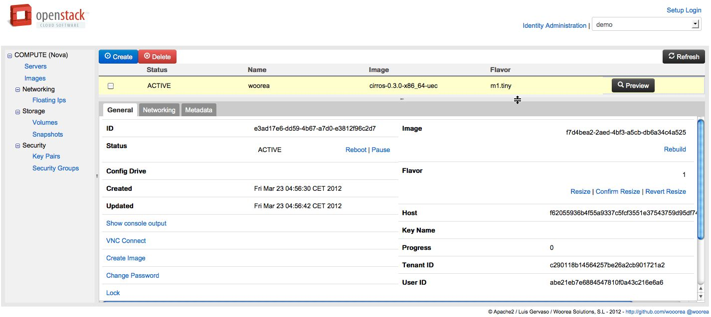 |
| Images | |
| Floating Ips | 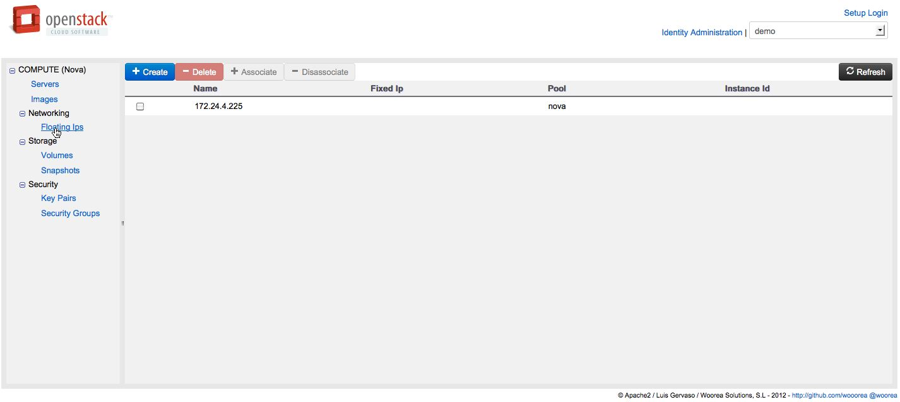 |
| Volumes | 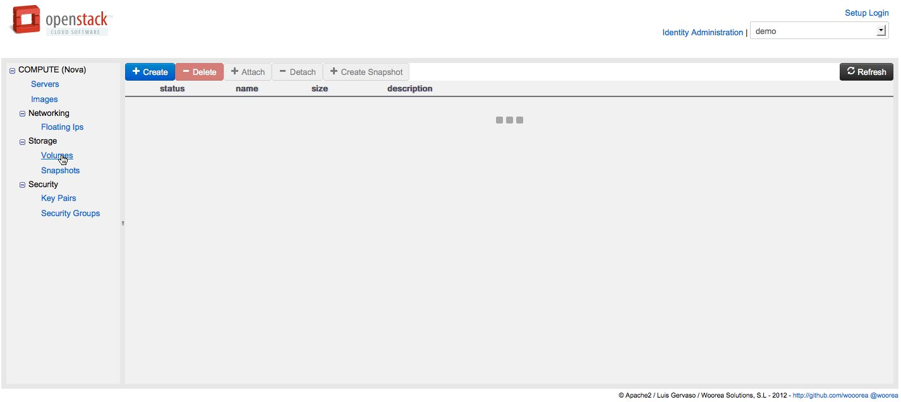 |
| Snapshots | 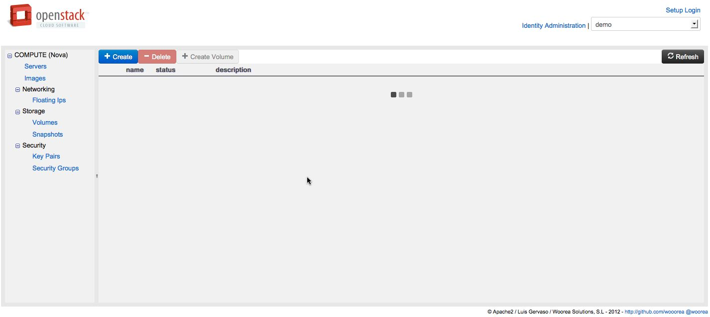 |
| Key Pairs | 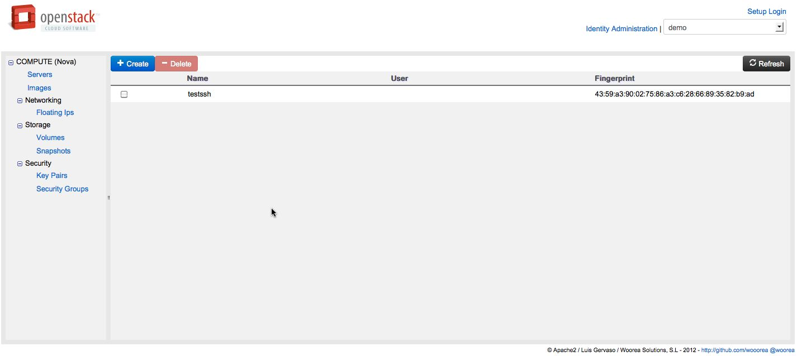 |
| Security Groups | 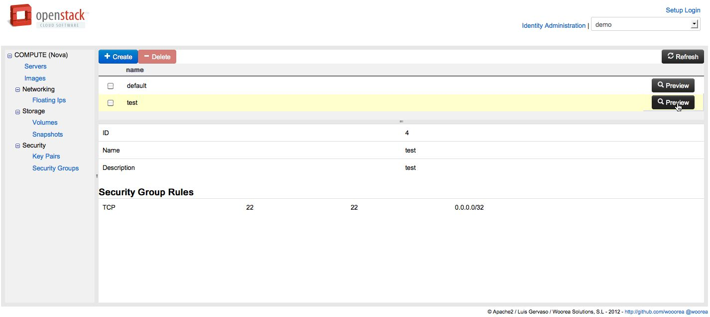 |
@woorea
Apache 2 License